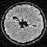
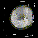
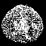
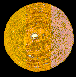
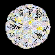
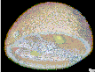
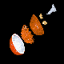

Geometric Analysis, Visualization, and Conceptualization of 3D Image Data
William Johnston and Wing Nip
Imaging and Distributed Computing Group
Information and Computing Sciences Division
Lawrence Berkeley Laboratory
Berkeley, CA 94720
Publication number: LBL-35329
Credits
CONTENTS
The acquisition and study of image-like data from throughout the volume of an object permits
us to represent and explore the internal three-dimensional structure of that object
exactly as it exists in the undisturbed object. This unit will explore how such image
data is obtained, and the kinds of analysis and visualization that can be done with the
data by using computer based imaging and visualization. This work introduces
concepts in 3D geometry, 2D and 3D image processing and display,
computer graphics and visualization, and the exciting ability of imaging and computer systems
to explore the frequently complex and invisible world of the "insides" of a plant,
animal, machine, etc.
In general terms the steps involved in this exploration are as follows, and we
will examine each of them in detail in the course of this study unit.
The image of the inside of an object can arise
from:
- Serial
sections obtained directly (e.g. confocal microscopy, or mechanical
sectioning of an object);
- Serial sections obtained from NMR or tomographic reconstruction;
- 3D Holography;
- Direct calculation from mathematical models.
The resulting 3D image is a discrete scalar field, that is, it is a 3D grid
with values given at each point of the grid. This type of 3D image is frequently
called a voxel data set. (The word "voxel" is derived
from "volume pixel"). The numeric values of the voxels must, of course, be interpreted
according to the nature of the imaging process (they might represent material
density, concentration of hydrogen, electron density, color, etc.) Figure 1 (

)
shows part of a 3D data set of an NMR (MRI) scan of an orange. The
image values (quantity of magnetically excitable hydrogen, which is typically
different in different type of biological tissues) are represented as shades of gray. Figure 2 (

)
use optical density to represent the 3D nature of the data.
In other words, each grid point
is assigned a gray value and opacity based on the magnitude of the data value
("0" is transparent and black,
while the highest value is completely opaque, and white).
When this representation is carefully designed, the voxel data set is seen
in a "cloud like" appearance.
This process (called segmentation) can be done automatically if the
regions are well separated in terms of data values. Normally, however, a human has
to give "hints" as to where the boundaries are located because imperfect
imaging techniques loose or modify the information needed for unambiguous
interpretation. These hints
are really the incorporation of auxiliary knowledge (what we know about the
object from other types of studies). For example, a human can say "I know
because of other imaging studies, and because I have cut this object open
and looked at it, that this boundary which appears to fade away in this
part of the image, really continues and reconnects over here.
The artifact arises from problems
in acquiring the 3D image. To correct for this I will draw in the boundary
to reflect what I know is really the case."
These hints are usually provided
in the form of "masks" defined in planes that are 2D slices through
the 3D data set. These slices may, or may not, correspond to any physical aspect
of the original imaging. The actual process entails using a "paint-brush" like
program to mark boundaries. This process has to be done separately for each
structure of interest. Figure 3 (
)
shows one of the 3D masks for each
of the six structures defined for the orange:
- The outer skin (the glossy orange surface);
- The inner skin (the
white pithy material below the glossy orange covering);
- The largest scale membranes that surround the pulpy part of the fruit (that
is, the membranes that form the familiar wedges of an orange);
- The volume region that is occupied by the pulp;
- The seeds;
- The "core".
A mask is defined for every slice that intersects the structure of interest. In
the case of the outer skin, this means that 64 masks are needed to define
the structure since the outer skin intersects all 64 slices of the volume
data. (
Figure 3
shows one typical mask for each of the six structures (at slice
32, which is about the middle of the orange).
By "geometric" model we mean a collection of geometric
primitives (points, lines, polygons, etc.) that accurately represent
the shape of the surface. These geometric descriptions are used
to enhance the visualization of the object and to provide for quantitative
analysis (the surface area, volume, mean curvature, topology, etc.).
When we started, the surfaces
of the structures were represented only implicitly by differences
in color.
There are a number of ways to convert the color changes into geometry.
Conceptually most of the methods involve some sort of contouring.
Consider a 2D slice of the volume image, and we draw lines through
that slice along pixels of constant value (color).
This operation effectively defines the boundary between areas of different color.
The masks mentioned above are human supplied hints as to where to draw these
contour lines in the areas where the color difference fades away.
By effectively stacking the masks, and covering the
surfaces with a tightly fitting, fishnet like mesh (a process called
tessellation) we generate
3D polygons that do not overlap each other, and do not leave holes in the mesh.
This mesh of small polygons is now a "geometric" definition of the surface
of the structure of interest. Such a geometric model is built for each structure
of interest. Figure 4 (

)
shows both the inner skin model, and the model for the
seeds.
The next step is to present the models in a way that allows people to understand
the spatial features and relationships in the interior
of the object. This is done by using a collection of computer graphics
techniques called visualization.
- The surface of one, or more, of the geometric models can be represented
as opaque as shown in Figure 5 (

)
- The masks can be treated as outlines, and stacked, and then used in combination with other models.
Figure 6 (

)
shows the membrane masks stacked, with the seed model represented as opaque
surfaces.
- Combinations of all of the available techniques usually give the best results as shown in Figure 7 (

).
When the modeling process is complete, students may explore and manipulate
the invisible geometry of the object. Figure 8 (

)
is the result of a high school
student using a commercial 3D animation program to make the "exploded"
view of the orange model produced the process described above.
What this student really wants to do is to make
an exploded view of a frog, not like anatomy books where inside
parts are pulled apart to expose what is underneath, but by leaving
everything in it's correct 3D relationship, and "fading out"
the parts that obscure the areas of interest, etc.
Berkeley Lab |
DST |
Notice to Users |
Whole Frog Project |
Virtual Frog
{kind=link}
{kind=link}
{kind=link}
{kind=link}
{kind=link}
{kind=link}
{kind=link}